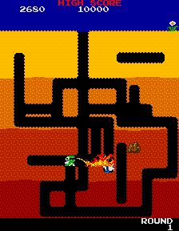

Dig Dug
Publishing Info
- Published by: Atari, Inc.
- Developed by: Namco Limited
- Released: Apr, 1982
Description

Dig Dug is a 1-2 player arcade game in which you have to use your shovel to dig your way through the earth.
Stopping you from doing this are two monsters, called Pooka and Fygar, who will continually chase you around.
The only weapon that you carry is an air pump, which you can use to inflate the monsters to the point where they explode. [...]
Game Categories
- Action
- Perspective: Side view
- Visual: Fixed
- Arcade
Quote
This definitely goes under the heading of "Games That Were Made While a Programmer Was on Drugs,"
or at least had a good imagination. And maybe they were into horror movies too.